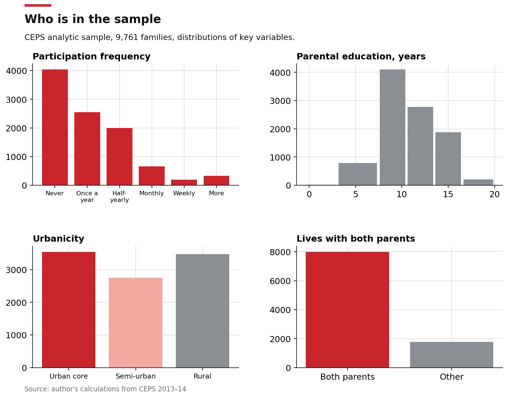
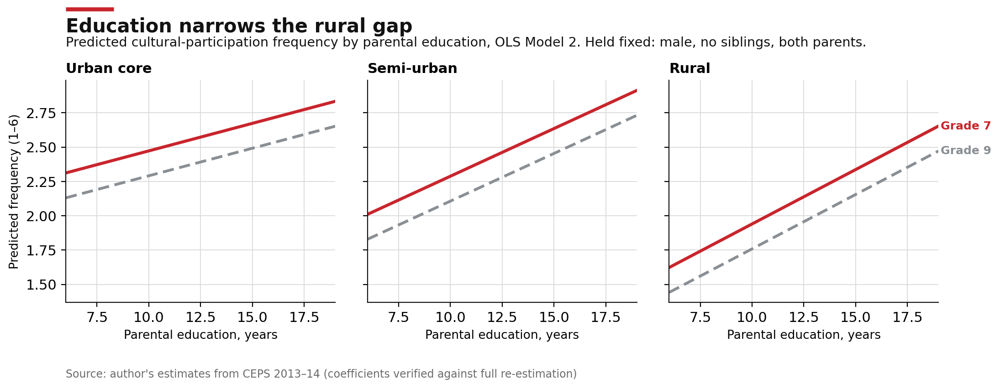
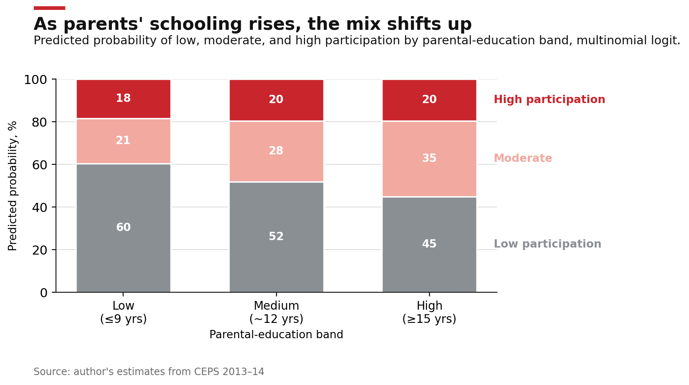
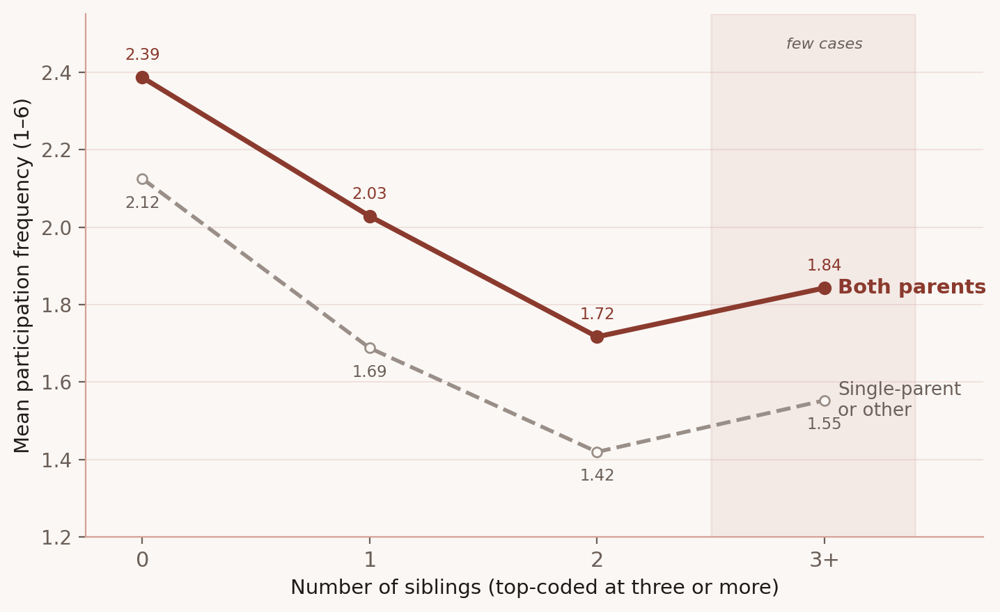

1. Why Cultural Participation Matters
Museum participation is not simply a matter of leisure—it is a form of learning, cultural identification, and long-term civic development. Sandell & Zimmerman (2017), Lin et al. (2023) highlight the potential of museum environments to shape reflective teaching and interactive learning. Holmes (2011), Acosta & Haden (2022) show that even brief museum-based tinkering experiences can generate gains in science learning and reflective thinking, particularly when scaffolded by facilitation and parents’ own education. Early museum visits foster children’s cognitive, creative, and social capacities (Cronin et al., 2020), and support learning transfer into the home environment, where caregivers mediate and extend the experience. Temple and Gan (2023) demonstrate that early involvement in cultural activities significantly predicts lifelong engagement, especially among men. Paredes (2016) illustrates immigrant identity may inspire engagement with museums as spaces for cultural validation and civic inclusion. In this way, museums act not only as educational tools but as vehicles of intergenerational transmission.
More broadly, participation in cultural life carries long-term implications for wellbeing. Løkken et al. (2020) find that cultural engagement, including receptive activities like museum visits, is associated with reduced all-cause mortality.
2. What Shapes Participation, and What Restricts It
Despite their growing visibility as educational environments, museums remain unequally accessed and unevenly experienced. Across contexts, one predictor stands out: education, especially parental education, emerges as the most consistent determinant of cultural participation (Falk & Katz-Gerro, 2016; Zieba, 2017). Tertiary education increases both the probability and frequency of attendance (Muñiz et al., 2017; Suarez-Fernandez et al., 2020; Bone et al., 2021), often surpassing income or occupational class in explanatory power (Haag & Specht, 2022; Fiorillo & Ofria, 2024). Cultural engagement is shaped not only by access to resources, but by the ability to navigate and decode highbrow spaces (Brida et al., 2016). This cultural capital, deeply embedded in class-based educational trajectories, is transmitted through families over time (Váradi & Józsa, 2023; Crispin & Beck, 2025).
Studies have extended this insight to children’s participation in cultural life. Mak and Fancourt (2021) show that out-of-school participation in arts and cultural activities is strongly predicted by parents’ own cultural engagement, neighborhood deprivation, and socioeconomic status. While school-based programs may flatten inequality temporarily, family influence remains the dominant force in long-term participation (Temple & Gan, 2023). Borrione et al. (2021) further observe that frequent-attending families tend to value museum staff expertise, educational content, and learning outcomes, while infrequent-attending families prioritize rest areas, multimedia, and play, suggesting that class-based orientations influence not just whether, but how families engage with museums.
Geography compounds these divides. Spatial barriers, including rural residence, neighborhood deprivation, and infrastructure scarcity, affect both access and perceived cultural belonging (Mak et al., 2021; Rodríguez-Puello & Iturra, 2024). Intra-household studies like Ateca-Amestoy and Ugidos (2021) reveal that women’s participation in cultural life is further shaped by childcare responsibilities and mobility constraints, suggesting that structural inequalities—not just preferences—govern family engagement with museums. Olivares and Piatak (2022) add a racial lens, showing that Black Americans are significantly less likely to attend museums than white peers, even after controlling for education and income. Yet Latinx and Black respondents are more likely to cite cultural heritage as a motivation for attendance, emphasizing the importance of representation and institutional culture.
At the macro level, Ateca-Amestoy & Prieto-Rodriguez (2024) confirm that education explains more inequality in cultural participation than race or geography. Importantly, these inequalities are mirrored in digital spaces, undermining the idea that online access resolves exclusion. Instead, cultural engagement, whether live or digital, remains clustered among the already-engaged.
3. The Case of China: Rapid Growth, Persistent Inequality
China's museum sector has ballooned. By the end of 2024 the country had 7,046 registered museums, roughly one per 200,000 people, more than nine in ten free to enter, and they recorded about 1.49 billion visits that year, a national record (National Cultural Heritage Administration, 2024). Admission fees have been swept away and public programming has expanded, even as cultural heritage is tied ever more tightly to state identity (Lu 2014; Shelach-Lavi 2019; Lin 2023, 2024). Yet who actually walks in remains sharply unequal. Maternal education predicts children's early cognitive stimulation, especially in cities (Rao et al. 2022), and even where entry is free, high-quality engagement is gated by design: limited reservation quotas, digital-first booking, and thin signage screen out families with less education or digital fluency (Li 2024). Recognition of museums' public value is itself concentrated among the highly educated (Zhao et al. 2024), which suggests participation is far from equitably distributed.
These barriers matter because Chinese museums now carry a double charge. They are state-sanctioned patriotic spaces and, at the same time, sites of experiential learning and social mobility. Yet large quantitative studies of children's attendance remain rare. Much work examines cultural nationalism, digital communication, or governance (Bollo and Zhang 2017); little asks how intergenerational inequality, and parental education in particular, shapes who reaches the museum at all. This study takes up that question.
4. Data and Measures
The analysis draws on the China Education Panel Survey (CEPS), which began in 2013 to 2014 with two cohorts, 7th and 9th grade. Using stratified sampling on local education levels and the size of the floating population, CEPS drew 28 county-level units, then randomly selected 112 schools and 438 classes, yielding 19,487 students. After removing cases with missing or internally inconsistent records, the analytic sample is 9,761 families.
Participation frequency was coded on a 1 to 6 scale, from "never" to "more than once a week." Parental education is the higher of the two parents' schooling, in years. Several variables are binary: female, grade 9, and both-parent family (the child lives with both parents, siblings allowed, about 82 percent). The number of siblings (n_siblings) enters as a count, top-coded at three or more, rather than a yes-or-no flag, since it is family size, not the mere presence of a sibling, that dilutes parental resources: about half the children are only children (50.3 percent), 37.6 percent have one sibling, 9.4 percent have two, and 2.7 percent have three or more, with the largest households (up to twelve siblings) concentrated in regions where the one-child policy did not bind. Top-coding at three keeps those rare large families from dominating the slope while still distinguishing them as a category. Urbanicity has three levels: urban core (36.3 percent), semi-urban (28.1 percent), and rural (35.6 percent).

5. OLS Model
Model 1 regresses participation frequency on the predictors without interactions:
Because the return to parental education may differ by place, Model 2 adds interactions between parental education and urbanicity:
An F-test prefers Model 2 (F(2, 9751) = 6.83, p = 0.0011): the interactions improve fit. The continuous education scale matters here, a point Section 8 returns to.

Predicted frequency falls as places become less urban, but the slope on parental education is steepest in rural areas, so a rural child whose parents are highly educated is predicted to participate nearly as often as an urban peer. Girls, 7th graders, and children in both-parent families show somewhat higher predicted frequency. Each additional sibling lowers it by about 0.12, and living with both parents raises it by about 0.19; Section 8 explains why these enter as separate, additive terms.
6. Binary Logistic Model
The outcome is recoded as 0 for "never" or "once a year" (67.5 percent) and 1 for any higher frequency. Parental education is grouped into three bands: low (≤ 9 years, 50.2 percent), medium (about 12 years, 28.4 percent), and high (≥ 15 years, 21.4 percent). By BIC, the model without interactions fits better (11,541 versus 11,569), consistent with the categorized education scale washing out the interaction seen in Model 2.
Log-odds of higher participation (base: low education, rural):
and the predicted probability follows the logistic transform:
Higher parental education, urban residence, being female, an earlier grade, and a both-parent family all raise the probability of higher participation, while each additional sibling lowers it.
7. Multinomial Logistic Model
Participation is split three ways: low ("never" or "once a year," 67.5 percent), moderate ("once every half year"), and high ("once a month" or more). The covariates match the binary model, and again BIC prefers the model without interactions. The two latent contrasts, relative to low participation, are:
where \(Z_1\) is moderate-versus-low and \(Z_2\) is high-versus-low. The predicted probabilities are the softmax of these contrasts:

The picture is consistent across all three models: parental education, urban residence, being female, an earlier grade, and a both-parent family are associated with higher participation.
8. Reflection on Method
Two methodological points deserve their own section, because each is a finding in its own right.
The interaction vanished because of categorization, not cleaning. The education-by-place interaction is significant in the OLS, then disappears in the logistic models. It is tempting to blame data cleaning, but the data are clear once the cause is isolated. Holding the cleaned sample and the outcome fixed and varying only how finely education is measured:
| Model | Education scale | Interaction with urbanicity | Verdict |
|---|---|---|---|
| OLS | continuous (years) | F(2, 9751) = 6.83, p = 0.0011 | significant |
| OLS | 3 categories | F(4, 9748) = 1.90, p = 0.11 | not significant |
| Binary logit | continuous (years) | LR χ²(2) = 13.2, p = 0.001 | significant |
| Binary logit | 3 categories | dropped by BIC | not significant |
The interaction survives at the continuous scale in both model families and dies only when education is collapsed into three bands. Collapsing education compresses exactly the variation that interacts with place, so the right reading is that categorization, not cleaning, obscured a real relationship. The continuous specification should be preferred when the interaction is of interest.
Cleaning still cost representativeness. That said, adjusting for family composition dropped roughly 10,000 cases, and the rural share fell from 41 percent to 35.6 percent. Those drops are unlikely to be random: migrant and left-behind families, who are disproportionately rural, are exactly the ones with incomplete family-composition records. So the cleaned sample buys internal consistency at the price of external validity, and the estimates here may understate rural disadvantage. This is a separate limitation from the interaction point above, and both should be kept in view.

9. Conclusion
Using CEPS data, this study asks how parental education and place shape children's cultural participation in China. Across all three models, parental education and urbanicity are the most consistent predictors. Higher parental schooling and urban residence are associated with significantly more frequent museum and cultural visits, even after adjusting for gender, grade, and household structure, and the education-by-place interaction shows that schooling matters most where place matters least, partly closing the rural gap rather than widening it.
The models also agree that an earlier grade, a both-parent family, and urban residence are associated with higher participation, and that each additional sibling is associated with less. With parental presence and sibling count entered as separate, additive terms, the two effects separate cleanly and their direction is stable.
Two limitations bound these claims. First, the outcome bundles museums with zoos and science centers, so it measures informal cultural participation broadly rather than museum attendance alone. Second, the study omits school-organized visits, which may matter most in less advantaged areas where family-initiated visits are rare. Both would tend to make these estimates conservative for museums proper.
Despite a decade of policy aimed at opening museums to everyone, participation remains tied to family background and place. As museums keep expanding as sites of learning and identity, narrowing these gaps will take more than free admission: lighter homework, support for children in single-parent or non-parental care, simpler non-digital booking, and funding for cultural programs in disadvantaged areas all deserve attention.
10. References
The full bibliography is available for download below.
Download full references (PDF) ↓